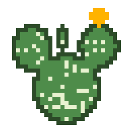
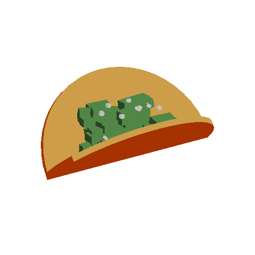

The language the habitat is written in. Nopales is a Scheme-family Lisp-1, and it is the one language humans and agents both write.
A habitat is a single running image: one OCaml process, Postgres as the object store, htmx as the interface. There is no build step between a change and the system, because the process is the API. You and your agents are editing the same live tree.
Code is data. Definitions live in branched rows with parent override, so your personal branch is a garden over the system defaults rather than a fork. Effects are capability-gated: an agent’s eval carries a mask, so it can compute and propose without reaching for a branch it was not granted.
That is the point of giving agents their own language instead of a VM. They can read the system they are running in, and rewrite themselves while it runs.
Nopales
Back to the catalog